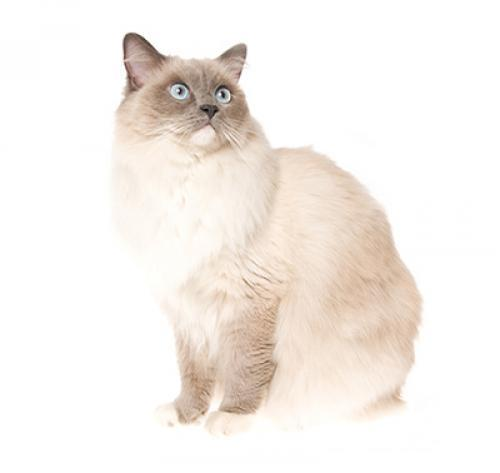

The Air Coated Ragdoll is a relatively new breed, developed in the 1960s. They got their fancy name (translated from English as “rag doll”) for their habit of stretching out on the owner’s lap and moving around the house in the owner’s arms. This is an excellent choice for people living in small apartments, including those with children. Ragdolls are very affectionate and strongly attached to their owner, so they will meet you at the door after work and follow you around the house.